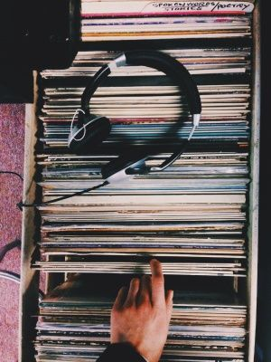
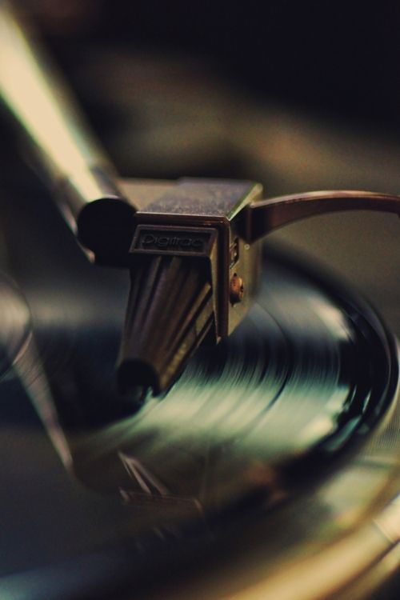

Welcome to the temple of music
|  | |
|  |
People like music for the same reason they like eating or having sex:
It makes the brain release a chemical that gives pleasure, a new study says.
The substance, dopamine, is involved both in anticipating a thrilling musical
moment and in feeling the rush.